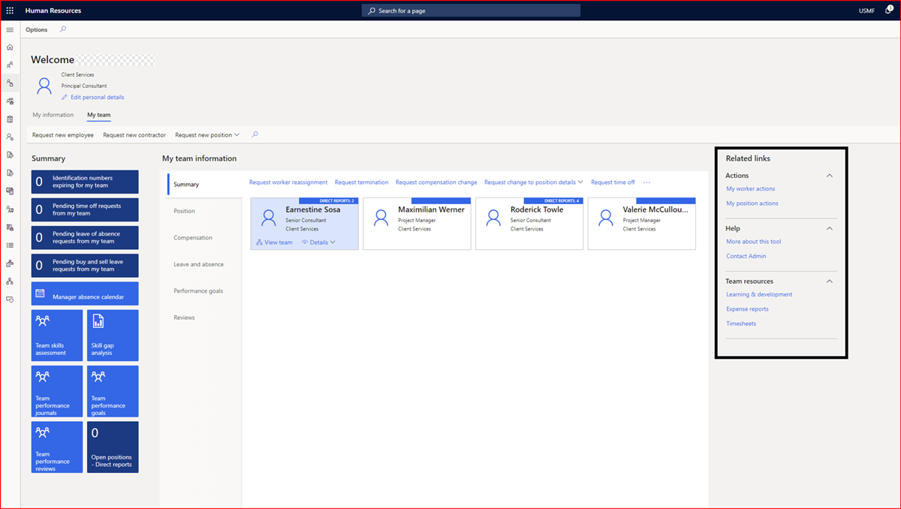

Create custom links in Manager self-service
You can add custom links on the My team tab in Manager self-service. This feature lets you provide quick access to important information. It's similar to adding custom links in the My information tab in Employee self service.
Enable the feature
To use this feature, enable Custom links in Manager self-service in the Feature management workspace. For more information about enabling preview features, see Manage features.
Set up custom links
In Human Resources parameters, select Manager self service.
Under Set up links for Managers, you can add, edit, or remove a link. You can also group the links together so they display in a group in Manager self-service.

To see the links, go to the My team tab in Employee self-service.
